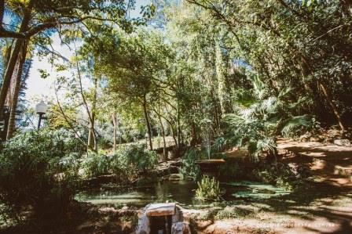

Centro Cultural Brasital
A Brasital foi fundada em 1980 com o nome de "Enrico Dell'Acqua & Cia", pelo industrial milanês Enrico Dell'Acqua, que organizou outras indústrias têxteis na Argentina e Chile e casas comerciais em Milão (Itália), São Paulo e Lima (Peru). Foi a primeira tecelagem de algodão a funcionar no município e produzir brins, popelines, tecidos adamascados (de seda da cor da fruta damasco), colchas e atoalhados de tão boa qualidade que, além de serem vendidas para o mercado brasileiro, também eram exportados para vários países.
Indústria chegou a atingir 9600m2 de área construída e empregava cerca de 80% da mão de obra disponível em São Roque. Rara a família são-roquense em que um de seus membros não tenha trabalhado na Brasital, isto sem se falar, ainda, de seu apito, que era a hora oficial da cidade. Em 1899, passou a Sociedade Anônima e se transformou na Societá di Esportazione Enrico Dell'Acqua. Pouco depois (1903), Dell'Acqua deixou a sociedade para se dedicar a outros empreendimentos.
Assim, um ano depois a firma passou a ser denominada "Societá per l'Esportazione e per Indústria Ítalo-Americana" quando foi incorporada ao grupo da fábrica de Salto. Em novembro de 1919, após várias mudanças na diretoria, a "Societá" foi sucedida pela Brasital S/A, com sede em Salto e filiais em São Paulo e Rio de Janeiro. Entretanto, a Brasital do algodão, não resistiu à tecnologia e principalmente aos preços menores do rayon e do nylon. Fechou suas portas por volta de 1970.
Em março de 1987, com o apoio do governo de São Paulo, o então Prefeito Mário Luís Campos de Oliveira conseguiu passar ao Patrimônio Municipal os 9600m2 das instalações, transformando-a no Centro Educacional e Cultural Brasital. O dia 1° de maio de 1987, com uma manhã ensolarada de 6ª feira, dia do Trabalho, ficou definitivamente assinalado na história de São Roque. Às 10:00 hs, após 17 anos de silêncio, soou o velho apito da Brasital e mais de 3000 pessoas atravessaram o portão da antiga fábrica e caminharam até as suas instalações, significando a conquista do histórico monumento pelo povo de São Roque.
E assim, a Brasital ressurgiu das cinzas, nela foi construído com amor e criatividade, um monumento cultural usufruído por grande parte da população de São Roque, tal a diversidade de atividades que ali se implantou. Tece hoje os fios de uma importante obra cultural, com a mesma qualidade dos tecidos de algodão que a energia do Rio Araçaí e a habilidade dos operários de São Roque '-fabricavam, para. O orgulho de todos nós, são-roquense.

O CEC Brasital pode ser visitado pela população local e turistas. Seu espaço físico abriga salas de aulas para oficinas culturais de música, teatro, dança, exposições, auditório, além dos Departamentos de Educação, Cultura e Turismo, a Biblioteca "Arthur Riedel" com seu diversificado acervo de livros dispostos numa área d 1048m2 com local para leitura, pesquisa! Uma gostosa praça de quiosques e uma maravilhosa trilha com extensão de 2.000 metros, que passa em sua grande parte pelas margens do canal que na época das atividades da Brasital era usada para transportar água para funcionamento da indústria têxtil. Um local propício para caminhadas, onde possível contemplar a natureza ali existente, formada por mata secundária nativa e eucaliptos com mais de cem anos de existência, além das pontes sobre o canal, implantadas ao longo do percurso, o que toma mais emocionante a caminhada. (Fonte: http://www.informasaoroque.com.br/brasital.htm)

{kind=link}
{kind=link}